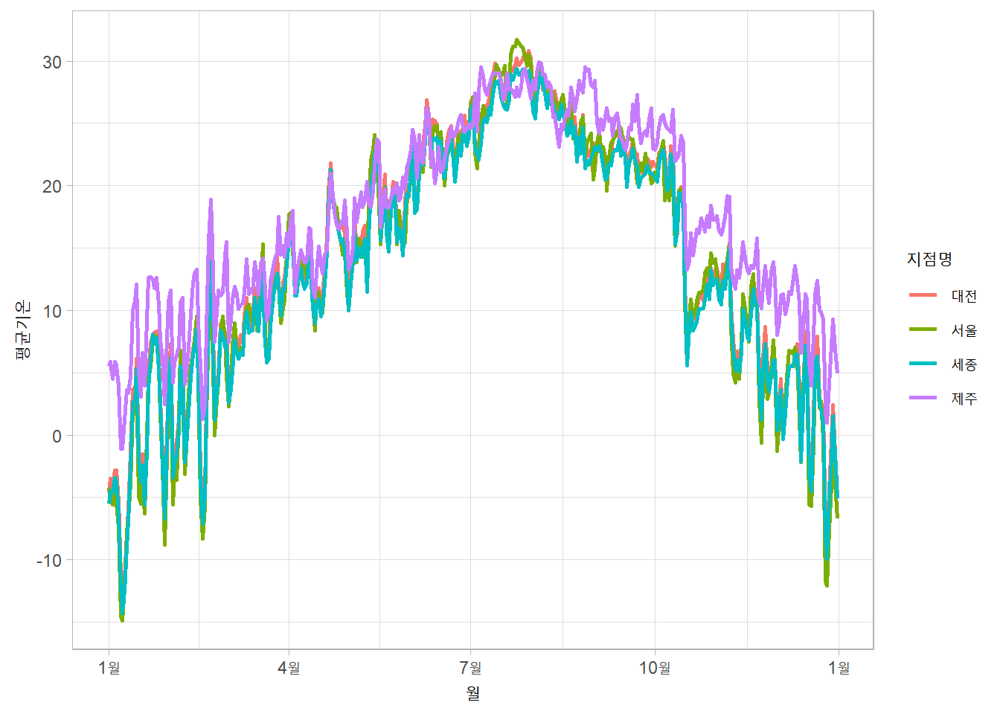
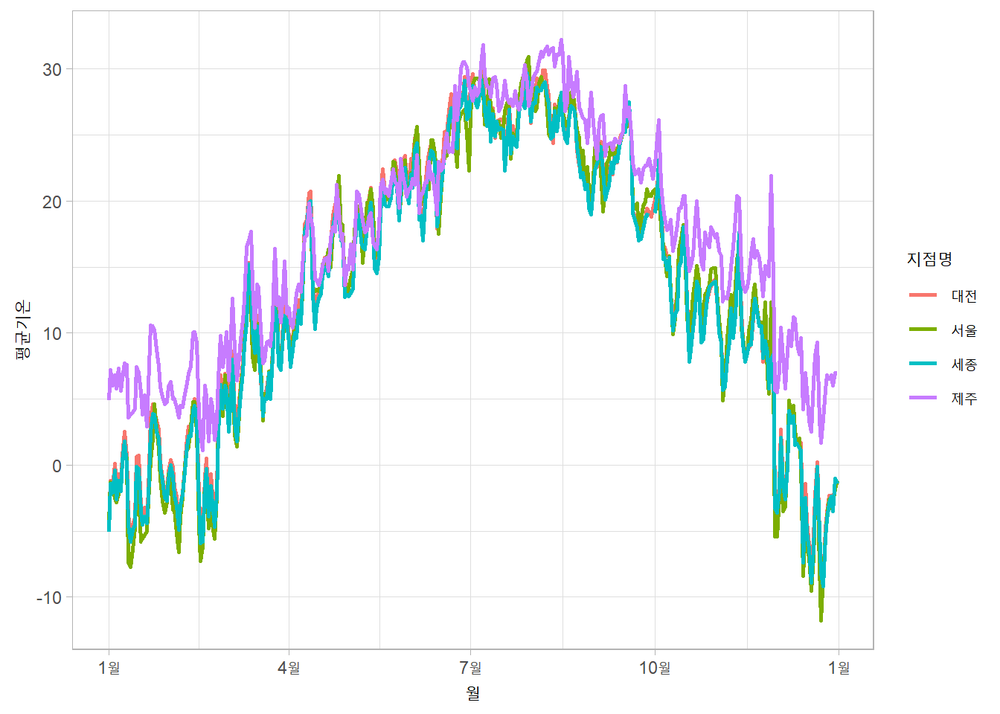
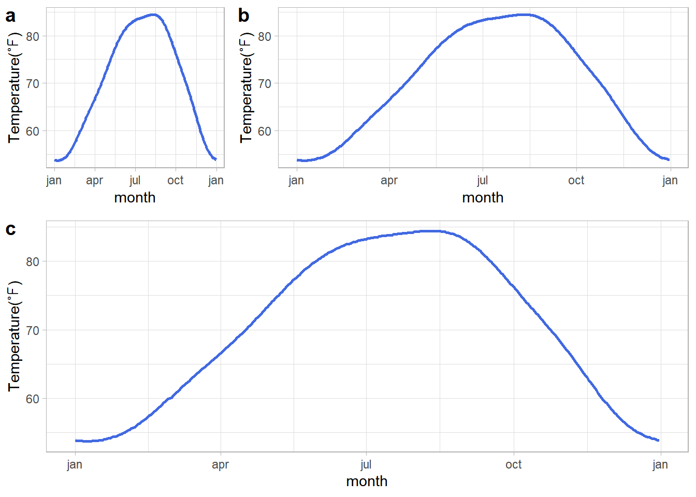
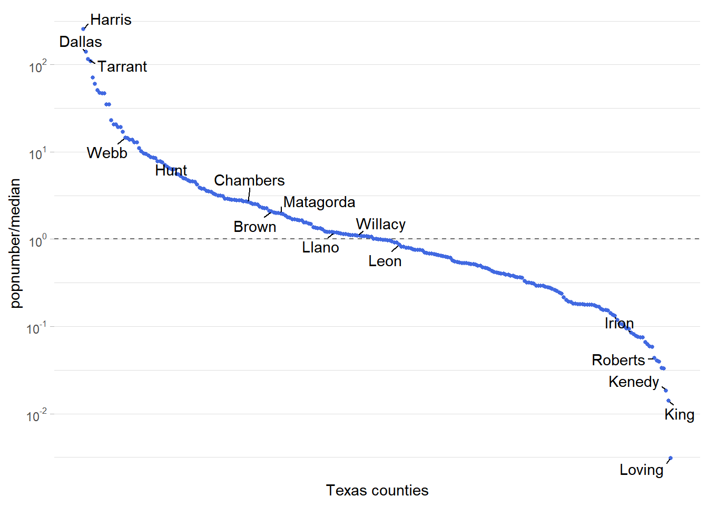
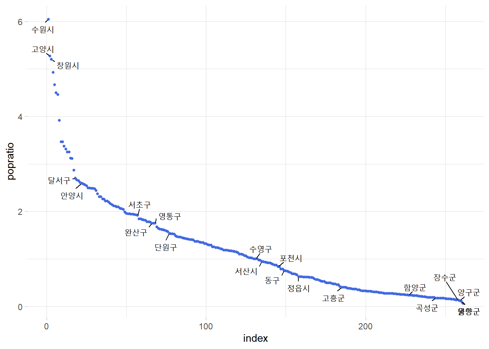
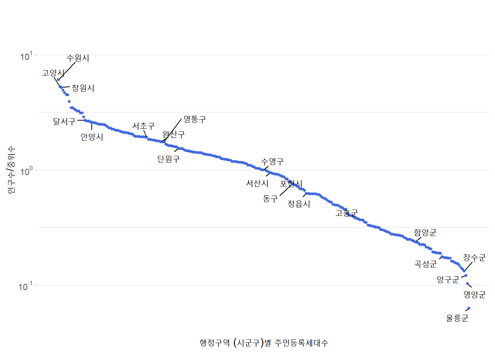
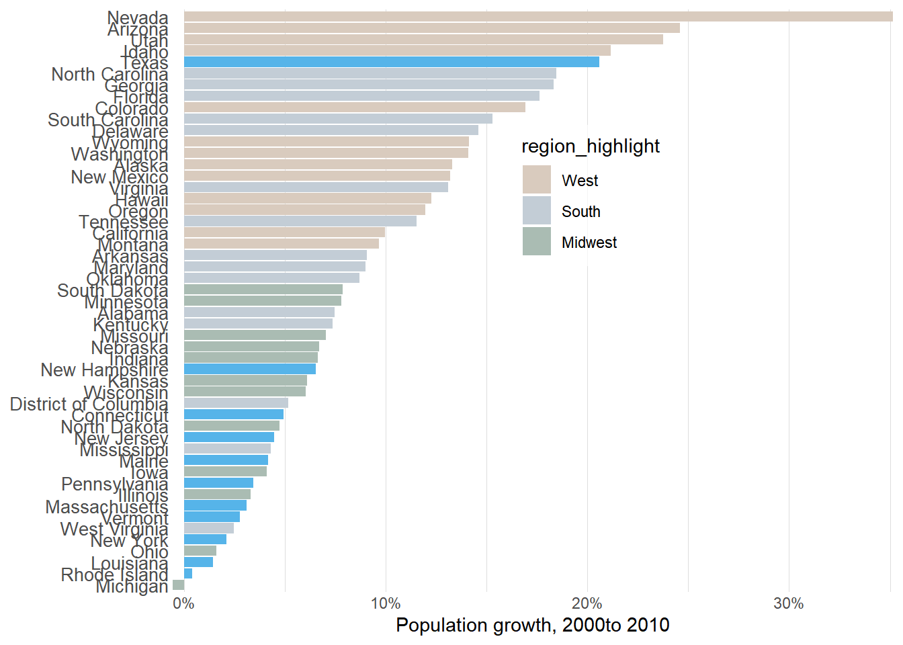
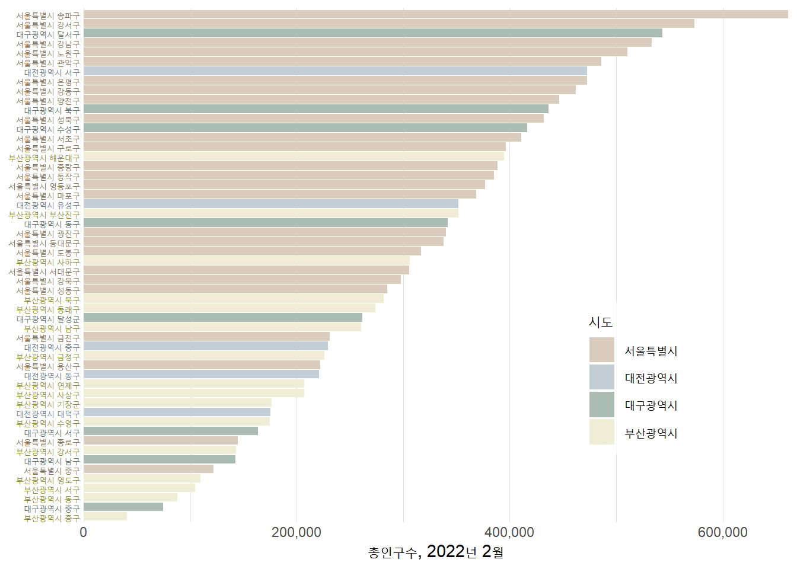

training markdown & GGplot
Train markdown, ggplot https://clauswilke.com/dataviz/
library packages
rm(list = ls())
library(ggplot2)
library(dplyr)
다음의 패키지를 부착합니다: 'dplyr'The following objects are masked from 'package:stats':
filter, lagThe following objects are masked from 'package:base':
intersect, setdiff, setequal, unionlibrary(ggrepel)
library(cowplot)mpg datasets
Read data, check dimension and data summary
data_raw <- read.csv("https://vincentarelbundock.github.io/Rdatasets/csv/ggplot2/mpg.csv")
data_raw %>% dim()[1] 234 12data_raw %>% head() X manufacturer model displ year cyl trans drv cty hwy fl class
1 1 audi a4 1.8 1999 4 auto(l5) f 18 29 p compact
2 2 audi a4 1.8 1999 4 manual(m5) f 21 29 p compact
3 3 audi a4 2.0 2008 4 manual(m6) f 20 31 p compact
4 4 audi a4 2.0 2008 4 auto(av) f 21 30 p compact
5 5 audi a4 2.8 1999 6 auto(l5) f 16 26 p compact
6 6 audi a4 2.8 1999 6 manual(m5) f 18 26 p compactdata_raw %>% summary() X manufacturer model displ
Min. : 1.00 Length:234 Length:234 Min. :1.600
1st Qu.: 59.25 Class :character Class :character 1st Qu.:2.400
Median :117.50 Mode :character Mode :character Median :3.300
Mean :117.50 Mean :3.472
3rd Qu.:175.75 3rd Qu.:4.600
Max. :234.00 Max. :7.000
year cyl trans drv
Min. :1999 Min. :4.000 Length:234 Length:234
1st Qu.:1999 1st Qu.:4.000 Class :character Class :character
Median :2004 Median :6.000 Mode :character Mode :character
Mean :2004 Mean :5.889
3rd Qu.:2008 3rd Qu.:8.000
Max. :2008 Max. :8.000
cty hwy fl class
Min. : 9.00 Min. :12.00 Length:234 Length:234
1st Qu.:14.00 1st Qu.:18.00 Class :character Class :character
Median :17.00 Median :24.00 Mode :character Mode :character
Mean :16.86 Mean :23.44
3rd Qu.:19.00 3rd Qu.:27.00
Max. :35.00 Max. :44.00 Drop index column followed during data load
data_use <- data_raw %>% select(-1)
data_use %>% head() manufacturer model displ year cyl trans drv cty hwy fl class
1 audi a4 1.8 1999 4 auto(l5) f 18 29 p compact
2 audi a4 1.8 1999 4 manual(m5) f 21 29 p compact
3 audi a4 2.0 2008 4 manual(m6) f 20 31 p compact
4 audi a4 2.0 2008 4 auto(av) f 21 30 p compact
5 audi a4 2.8 1999 6 auto(l5) f 16 26 p compact
6 audi a4 2.8 1999 6 manual(m5) f 18 26 p compactscatter plot
Use displ and hwy
displ : Displacement
hwy : Highway fuel economy
ggplot(data_use, aes(x=displ, y=hwy)) + geom_point()
smooth line
ggplot(data_use, aes(x=displ, y=hwy)) + geom_smooth()`geom_smooth()` using method = 'loess' and formula = 'y ~ x'
scatter & smooth line
ggplot(data_use, aes(x=displ, y=hwy)) +
geom_point() +
geom_smooth()`geom_smooth()` using method = 'loess' and formula = 'y ~ x'
ncdc_normals
The U.S. Climate Normals are a large suite of data products that provide information about typical climate conditions for thousands of locations across the United States.
Load data
data_file <- read.csv("ncdc_normals.csv")Check data information
dim(data_file)[1] 2745366 6data_file %>% head() station_id month day temperature flag date
1 AQW00061705 1 1 82.4 C 0000-01-01
2 AQW00061705 1 2 82.4 C 0000-01-02
3 AQW00061705 1 3 82.4 C 0000-01-03
4 AQW00061705 1 4 82.4 C 0000-01-04
5 AQW00061705 1 5 82.4 C 0000-01-05
6 AQW00061705 1 6 82.4 C 0000-01-06data_file %>% sapply(class) # 날짜 형식 변경 station_id month day temperature flag date
"character" "integer" "integer" "numeric" "character" "character" Convert date format (character -> date)
data_file$date <- data_file$date %>% as.Date("%Y-%m-%d")There are 7501 measurement locations
data_file$station_id %>% unique() %>% length()[1] 7501Specifying 4 Station and use join() function
station_loc <- data.frame(station_id = c("USW00014819","USC00042319","USW00093107","USW00012918"),
location = c("Chicago","Death valley","San diego","Houston"))temps_long <- data_file %>% inner_join(station_loc,by="station_id")
temps_long %>% head() station_id month day temperature flag date location
1 USC00042319 1 1 51.0 S 0000-01-01 Death valley
2 USC00042319 1 2 51.2 S 0000-01-02 Death valley
3 USC00042319 1 3 51.3 S 0000-01-03 Death valley
4 USC00042319 1 4 51.4 S 0000-01-04 Death valley
5 USC00042319 1 5 51.6 S 0000-01-05 Death valley
6 USC00042319 1 6 51.7 S 0000-01-06 Death valleyLine plot by location
ggplot(temps_long, aes(x=date,y=temperature,color=location))+
geom_line()
Create a scale to display on the x-axis.
date_s <- "0000-01-01" %>% as.Date("%Y-%m-%d") #Y는 대문자
date_e <- "0001-01-01" %>% as.Date("%Y-%m-%d")
break_date <- seq.Date(date_s, date_e, by = "3 month")Line plot, date x scale
ggplot(temps_long, aes(x=date, y=temperature, color=location))+
geom_line()+
scale_x_date(name="month",
breaks = break_date,
labels = c("jan", "apr", "jul", "oct", "jan"))+
theme_light()
Line plot, date x scale, y limits, labs variable
ggplot(temps_long, aes(x=date, y=temperature, color=location))+
geom_line()+
scale_x_date(name="month",
breaks = break_date,
labels = c("jan", "apr", "jul", "oct", "jan"))+
scale_y_continuous(name = "temp",
limits = c(20,105))+
theme_light()+
labs(title = "title", subtitle = "subtitle", caption = "caption", tag = "tag")
Tile plot, mean temperature by month, location
mean_temps <- temps_long %>%
group_by(month,location) %>%
summarize(mean = mean(temperature)) %>%
ungroup() %>%
mutate(month = factor(month %>% paste(),
levels = 1:12 %>% paste()))`summarise()` has grouped output by 'month'. You can override using the
`.groups` argument.Viridis is Color Palette
ggplot(mean_temps,aes(x = month, y = location, fill = mean))+
geom_tile(width = .95,height = 0.95)+
scale_fill_viridis_c(option = "B",begin = 0.15, end = 0.98,
name = "temperature")+
coord_fixed(expand = FALSE)+
ylab(NULL)
Pie chart, Polar coordinates
The polar coordinate system is most commonly used for pie charts, which are a stacked bar chart in polar coordinates.
format(x,"%B") Outputs unabbreviated month
date_lab <- format(break_date,"%B")
date_lab[1] "1월" "4월" "7월" "10월" "1월" ggplot(temps_long, aes(x=date,y=temperature,color=location))+
geom_line(linewidth = 1.1)+
scale_x_date(name = "month",
breaks = break_date,
labels = date_lab)+
scale_y_continuous(name = "temperature",
limits = c(0,105))+
coord_polar(theta = "x",
start = pi,
direction = 1)+
theme_light()+
theme(panel.border = element_blank())
OBS ASOS 2021 Korea
Observations Automated Surface Observing System
Average, minimum, and maximum temperatures by region(서울, 대전, 세종, 제주)
Load data
data_2021 <- read.csv("https://raw.githubusercontent.com/Sungileo/trainsets/main/OBS_ASOS_DD_20220308125952.csv", fileEncoding = "euc-kr")Check data information
data_2021 %>% dim()[1] 1460 6data_2021 %>% head() 지점 지점명 일시 평균기온..C. 최저기온..C. 최고기온..C.
1 108 서울 2021-01-01 -4.2 -9.8 1.6
2 108 서울 2021-01-02 -5.0 -8.4 -1.4
3 108 서울 2021-01-03 -5.6 -9.1 -2.0
4 108 서울 2021-01-04 -3.5 -8.4 0.3
5 108 서울 2021-01-05 -5.5 -9.9 -2.1
6 108 서울 2021-01-06 -7.4 -12.0 -1.9data_2021 %>% sapply(class) 지점 지점명 일시 평균기온..C. 최저기온..C. 최고기온..C.
"integer" "character" "character" "numeric" "numeric" "numeric" Convert date format (character -> date)
data_2021$일시 <-data_2021$일시 %>% as.Date("%Y-%m-%d")
data_2021 %>% sapply(class) 지점 지점명 일시 평균기온..C. 최저기온..C. 최고기온..C.
"integer" "character" "Date" "numeric" "numeric" "numeric" Summary data
data_2021 %>% summary() 지점 지점명 일시 평균기온..C.
Min. :108.0 Length:1460 Min. :2021-01-01 Min. :-14.90
1st Qu.:126.8 Class :character 1st Qu.:2021-04-02 1st Qu.: 7.90
Median :158.5 Mode :character Median :2021-07-02 Median : 15.00
Mean :166.0 Mean :2021-07-02 Mean : 14.77
3rd Qu.:197.8 3rd Qu.:2021-10-01 3rd Qu.: 23.10
Max. :239.0 Max. :2021-12-31 Max. : 31.70
최저기온..C. 최고기온..C.
Min. :-19.10 Min. :-10.70
1st Qu.: 3.10 1st Qu.: 13.18
Median : 11.10 Median : 20.15
Mean : 10.69 Mean : 19.56
3rd Qu.: 19.60 3rd Qu.: 27.70
Max. : 28.10 Max. : 36.50 Create a scale to display on the x-axis.
date_21s <- "2021-01-01" %>% as.Date("%Y-%m-%d") #Y는 대문자
date_21e <- "2022-01-01" %>% as.Date("%Y-%m-%d")
break_date_21 <- seq.Date(date_21s, date_21e, by = "3 month")Ploting
ggplot(data_2021,aes(x = 일시,y = 평균기온..C., color = 지점명))+
geom_line(linewidth = 1) +
scale_x_date(name ="월",
breaks = break_date_21,
labels = c("1월","4월","7월","10월","1월")) +
scale_y_continuous(name = "평균기온")+
theme_light()
OBS ASOS 2022 Korea
Same process
data_2022 <- read.csv("https://raw.githubusercontent.com/Sungileo/trainsets/main/OBS_ASOS_DD_20230322080932.csv", fileEncoding = "euc-kr")
data_2022$일시 <-data_2022$일시 %>% as.Date("%Y-%m-%d")data_2022 %>% summary() 지점 지점명 일시 평균기온..C.
Min. :108.0 Length:2555 Min. :2022-01-01 Min. :-11.80
1st Qu.:133.0 Class :character 1st Qu.:2022-04-02 1st Qu.: 8.20
Median :185.0 Mode :character Median :2022-07-02 Median : 16.40
Mean :175.1 Mean :2022-07-02 Mean : 15.27
3rd Qu.:189.0 3rd Qu.:2022-10-01 3rd Qu.: 23.00
Max. :239.0 Max. :2022-12-31 Max. : 32.20
NA's :2
최저기온..C. 최고기온..C.
Min. :-13.800 Min. :-8.60
1st Qu.: 4.225 1st Qu.:12.30
Median : 12.600 Median :20.75
Mean : 11.626 Mean :19.49
3rd Qu.: 19.800 3rd Qu.:27.20
Max. : 28.900 Max. :37.50
NA's :1 NA's :1 date_22s <- "2022-01-01" %>% as.Date("%Y-%m-%d") #Y는 대문자
date_22e <- "2023-01-01" %>% as.Date("%Y-%m-%d")
break_date_22 <- seq.Date(date_22s, date_22e, by = "3 month")data_2022$지점명 %>% unique()[1] "서울" "대전" "제주" "고산" "성산" "서귀포" "세종" Filter only 서울, 대전, 제주, 세종
data_2022_2 <- data_2022 %>% filter(data_2022$지점명 %in% c("서울","대전","제주","세종"))
data_2022_2$지점명 %>% unique()[1] "서울" "대전" "제주" "세종"ploting
ggplot(data_2022_2,aes(x = 일시,y = 평균기온..C., color = 지점명))+
geom_line(linewidth = 1) +
scale_x_date(name ="월",
breaks = break_date_22,
labels = c("1월","4월","7월","10월","1월")) +
scale_y_continuous(name = "평균기온")+
theme_light()
Tile plot, mean temperature by month, location
d <- data_2022_2 %>%
mutate(month = 일시 %>% format("%B")) %>%
group_by(month,지점명) %>%
summarize(mean = mean(평균기온..C.)) %>%
ungroup()`summarise()` has grouped output by 'month'. You can override using the
`.groups` argument.ggplot(d,aes(x = month, y = 지점명, fill = mean))+
geom_tile(width = .95,height = 0.95)+
scale_fill_viridis_c(option = "B",begin = 0.15, end = 0.99,
name = "temperature")+
coord_fixed(expand = FALSE)+
ylab(NULL)
Pie chart, Polar coordinates
ggplot(data_2022_2,aes(x = 일시,y = 평균기온..C., color = 지점명))+
geom_line(linewidth = 1) +
scale_x_date(name ="월",
breaks = break_date_22,
labels = c("1월","4월","7월","10월","1월")) +
scale_y_continuous(name = "평균기온",
limits = c(-20,35))+
coord_polar(theta = "x",
start = pi,
direction = 1)+
theme_light()+
theme(panel.border = element_blank())
ncdc normals Houston
Load & filter only Houston temperature
data_file <- read.csv("ncdc_normals.csv")
data_file$date <- data_file$date %>% as.Date("%Y-%m-%d")
houston <- data.frame(station_id = c("USW00012918"), location = c("Houston"))
houston_temps <- data_file %>% inner_join(houston,by="station_id")
houston_temps %>% head() station_id month day temperature flag date location
1 USW00012918 1 1 53.9 S 0000-01-01 Houston
2 USW00012918 1 2 53.8 S 0000-01-02 Houston
3 USW00012918 1 3 53.8 S 0000-01-03 Houston
4 USW00012918 1 4 53.8 S 0000-01-04 Houston
5 USW00012918 1 5 53.8 S 0000-01-05 Houston
6 USW00012918 1 6 53.7 S 0000-01-06 HoustonSet X scale breaks, Plot
date_s <- "0000-01-01" %>% as.Date("%Y-%m-%d") #Y는 대문자
date_e <- "0001-01-01" %>% as.Date("%Y-%m-%d")
break_date <- seq.Date(date_s, date_e, by = "3 month")
ggplot(houston_temps, aes(x=date, y=temperature,color = location))+
geom_line(linewidth = 1,color = "royalblue")+
scale_x_date(name="month",
breaks = break_date,
labels = c("jan", "apr", "jul", "oct", "jan"))+
theme_light()+
ylab("Temperature(℉)")
Use cowplot package to arrange multiple plots into a grid
library(cowplot)Specify plot as a object houston_plot
houston_plot <- ggplot(houston_temps, aes(x=date, y=temperature,color = location))+
geom_line(linewidth = 1,color = "royalblue")+
scale_x_date(name="month",
breaks = break_date,
labels = c("jan", "apr", "jul", "oct", "jan"))+
theme_light()+
ylab("Temperature(℉)")arrange multiple plots into a grid
plot_ab <- plot_grid(houston_plot,houston_plot,
nrow = 1,
rel_widths = c(1,2),
labels = c("a","b"))
plot_abc <- plot_grid(plot_ab, houston_plot,
ncol = 1,
rel_heights = c(1.5,2),
labels = c("","c"))
plot_abc
Texas counties
Texas counties by land area, population, and population density
texas_cnt <- read.csv("https://raw.githubusercontent.com/christianmendoza/texas-counties/main/data/texas-counties.csv")
texas_cnt %>% head() county fips_code population area_sq_mi pop_per_sq_mi
1 Anderson 48001 58402 1071 54.53
2 Andrews 48003 18440 1501 12.29
3 Angelina 48005 86506 802 107.86
4 Aransas 48007 24510 252 97.26
5 Archer 48009 8681 910 9.54
6 Armstrong 48011 1839 914 2.01Select county, population columns
remove “county” word in county columns ex) “sungil county” -> “sungil”
calculate popratio = population/ meadian of total population
list in order of highest population
Create an index column with a number, Add labels to the top 3, bottom 3, and randomly determined values
runif(x) Outputs a random number between 0 and 1
tx_counties <- texas_cnt %>%
select(county,population) %>%
mutate(county = gsub("county","",county),
popratio = population/median(population)) %>%
arrange(desc(popratio)) %>%
mutate(index = 1:n(),
label = ifelse(index<=3|index>n()-3|runif(n())<.04, county, ""))
tx_counties %>% head() county population popratio index label
1 Harris 4728030 256.42857 1 Harris
2 Dallas 2586050 140.25654 2 Dallas
3 Tarrant 2126477 115.33122 3 Tarrant
4 Bexar 2028236 110.00304 4
5 Travis 1305154 70.78609 5
6 Collin 1109462 60.17258 6 ggrepel provides geoms for ggplot2 to repel overlapping text labels
library(ggrepel)point plot, overlapped text label
ggplot(tx_counties,aes(x=index,y=popratio))+
geom_hline(yintercept = 0, linetype = 2, color = "grey40")+
geom_point(size = 1, color = "royalblue")+
geom_text_repel(aes(label = label),
min.segment.length = 0,
max.overlaps = 100)+
theme_light()+
theme(panel.border = element_blank())
Point plot, y log scale
There are two main reasons to use logarithmic scales in charts and graphs. The first is to respond to skewness towards large values; i.e., cases in which one or a few points are much larger than the bulk of the data. The second is to show percent change or multiplicative factors.
label_log10 <- sapply(-2:2,function(i) as.expression(bquote(10^ .(i))))
ggplot(tx_counties,aes(x=index,y=popratio))+
geom_hline(yintercept = 1, linetype = 2, color = "grey40")+
geom_point(size = 1, color = "royalblue")+
geom_text_repel(aes(label = label),
min.segment.length = 0,
max.overlaps = 100)+
scale_y_log10(name = "popnumber/median",
breaks = 10^(-2:2),
labels = label_log10)+
scale_x_continuous(name = "Texas counties",
breaks = NULL)+
theme_light()+
theme(panel.border = element_blank())
시군구 인구수 2023년 2월
data_pop <- read.csv("https://raw.githubusercontent.com/Sungileo/trainsets/main/%ED%96%89%EC%A0%95%EA%B5%AC%EC%97%AD_%EC%8B%9C%EA%B5%B0%EA%B5%AC_%EB%B3%84_%EC%A3%BC%EB%AF%BC%EB%93%B1%EB%A1%9D%EC%84%B8%EB%8C%80%EC%88%98_202302.csv",encoding = "utf-8")
data_pop %>% head() 행정구역.시군구.별 X2022.11 X2022.12 X2023.01 X2023.02
1 종로구 72666 72524 72479 72773
2 중구 63167 63139 63123 63492
3 용산구 109905 109805 109734 109778
4 성동구 133435 133305 133293 133517
5 광진구 169376 169291 169416 169648
6 동대문구 170154 169873 169716 170766Same process
data_202302 <- data_pop %>%
filter(X2023.02>0) %>%
select(행정구역.시군구.별,X2023.02) %>%
mutate(popratio = X2023.02/median(X2023.02)) %>%
arrange(desc(popratio)) %>%
mutate(index = 1:n(),label = ifelse(index<=3|index>n()-3|runif(n())<.04, 행정구역.시군구.별, ""))data_202302 %>% head() 행정구역.시군구.별 X2023.02 popratio index label
1 수원시 530462 6.043498 1 수원시
2 고양시 462873 5.273464 2 고양시
3 창원시 456357 5.199228 3 창원시
4 용인시 432476 4.927154 4
5 성남시 409466 4.665003 5
6 청주시 394735 4.497175 6 Point plot
ggplot(data_202302,aes(x=index,y=popratio))+
geom_point(size = 1, color = "royalblue")+
geom_text_repel(aes(label = label),
min.segment.length = 0,
max.overlaps = 100)+
theme_light()+
theme(panel.border = element_blank())
Point plot, y log scale
label_log10 <- sapply(-2:2,function(i) as.expression(bquote(10^ .(i))))
ggplot(data_202302,aes(x=index,y=popratio))+
geom_point(size = 1, color = "royalblue")+
geom_text_repel(aes(label = label),
min.segment.length = 0,
max.overlaps = 100)+
scale_y_log10(name = "인구수/중위수",
breaks = 10^(-2:2),
labels = label_log10,
limits = c(10^-1.3,10^1.3))+
theme_light()+
theme(panel.border = element_blank())+
scale_x_continuous(name = "행정구역 (시군구)별 주민등록세대수",
breaks = NULL)
RColorBrewer
library(colorspace)
RColorBrewer::display.brewer.all()
US census , US regions
US_census is dataset of population per region, age, human race
US_region is dataset of State informations
Load data
US_census <- read.csv("https://raw.githubusercontent.com/Sungileo/trainsets/main/drive-download-20230405T011215Z-001/US_census.csv")
US_regions <- read.csv("https://raw.githubusercontent.com/Sungileo/trainsets/main/drive-download-20230405T011215Z-001/US_regions.csv")Join & group by State
summaise 2000 population, 2010 population, population growth, total area size
popgrowth_df <- US_census %>% left_join(US_regions) %>%
group_by(region,division,state) %>%
summarize(pop2000 = sum(pop2000, na.rm = TRUE),
pop2010 = sum(pop2010, na.rm = TRUE),
popgrowth = (pop2010-pop2000)/pop2000,
area = sum(area)) %>%
arrange(popgrowth) %>%
ungroup() %>%
mutate(state = factor(state,levels = state),
region = factor(region, levels = c("West","South","Midwest","Northwest")))Joining with `by = join_by(state)`
`summarise()` has grouped output by 'region', 'division'. You can override
using the `.groups` argument.popgrowth_df %>% head()# A tibble: 6 × 7
region division state pop2000 pop2010 popgrowth area
<fct> <chr> <fct> <int> <int> <dbl> <dbl>
1 Midwest East North Central Michigan 9938444 9883640 -0.00551 56539.
2 <NA> New England Rhode Island 1048319 1052567 0.00405 1034.
3 South West South Central Louisiana 4468976 4533372 0.0144 43204.
4 Midwest East North Central Ohio 11353140 11536504 0.0162 40861.
5 <NA> Middle Atlantic New York 18976457 19378102 0.0212 47126.
6 South South Atlantic West Virginia 1808344 1852994 0.0247 24038.Set Colorspace
region_colors <- c("#E69F00","#56B4E9","#009E73","#F0E442")
state_colors <- region_colors[as.numeric(popgrowth_df$region)]
state_colors_dark = colorspace::darken(state_colors,0.4)Plot with color
ggplot(popgrowth_df,aes(x = state, y = 100*popgrowth, fill = region))+
geom_col()+
scale_y_continuous(name = "population growth, 2000 to 2010",
labels = scales::percent_format(scale = 1),
expand = c(0,0))+
scale_fill_manual(values = region_colors)+
coord_flip()+
theme_light()+
theme(panel.border = element_blank(),
panel.grid.major.y = element_blank(),
axis.title.y = element_blank(),
axis.ticks.length = unit(0,"pt"),
axis.text.y = element_text(size=10,color = state_colors),
legend.position = c(.58,.68),
legend.background = element_rect(fill="#FFFFFFb0"))Warning: Vectorized input to `element_text()` is not officially supported.
ℹ Results may be unexpected or may change in future versions of ggplot2.
2022 02 주민등록인구 및 세대 현황
Load & change type
kor_202202 <- read.csv("https://raw.githubusercontent.com/Sungileo/trainsets/main/202202_%EC%A3%BC%EB%AF%BC%EB%93%B1%EB%A1%9D%EC%9D%B8%EA%B5%AC%EB%B0%8F%EC%84%B8%EB%8C%80%ED%98%84%ED%99%A9.csv")
kor_202202 %>% head() 행정구역 행정구역_코드 총인구수 세대수 세대당_인구 남자_인구수
1 서울특별시 1100000000 9508451 4442586 2.14 4615823
2 서울특별시 종로구 1111000000 144575 73763 1.96 70092
3 서울특별시 중구 1114000000 122167 63644 1.92 59446
4 서울특별시 용산구 1117000000 222413 111134 2.00 106881
5 서울특별시 성동구 1120000000 285137 134286 2.12 138866
6 서울특별시 광진구 1121500000 340494 168975 2.02 164226
여자_인구수 남여_비율
1 4892628 0.94
2 74483 0.94
3 62721 0.95
4 115532 0.93
5 146271 0.95
6 176268 0.93kor_202202 %>% sapply(class) 행정구역 행정구역_코드 총인구수 세대수 세대당_인구
"character" "numeric" "numeric" "numeric" "numeric"
남자_인구수 여자_인구수 남여_비율
"numeric" "numeric" "numeric" kor_202202$행정구역_코드 <- kor_202202$행정구역_코드 %>% format()filter 서울, 대전 ,대구, 부산
kor_202202_use <- kor_202202 %>%
filter(substr(행정구역,1,2) %in% c("서울","대전","대구","부산")) %>%
filter(substr(행정구역_코드,3,4)!="00") %>%
select(행정구역,총인구수) %>%
arrange(총인구수)kor_202202_use$시도 = sapply(kor_202202_use$행정구역,
function(x) strsplit(x, " ")[[1]][1])
kor_202202_use$시도 = factor(kor_202202_use$시도,
levels = c("서울특별시","대전광역시","대구광역시","부산광역시"))kor_202202_use %>% head() 행정구역 총인구수 시도
1 부산광역시 중구 40582 부산광역시
2 대구광역시 중구 74710 대구광역시
3 부산광역시 동구 88245 부산광역시
4 부산광역시 서구 104618 부산광역시
5 부산광역시 영도구 109991 부산광역시
6 서울특별시 중구 122167 서울특별시kor_202202_use %>% summary() 행정구역 총인구수 시도
Length:54 Min. : 40582 서울특별시:25
Class :character 1st Qu.:207148 대전광역시: 5
Mode :character Median :305946 대구광역시: 8
Mean :309033 부산광역시:16
3rd Qu.:407067
Max. :661452 state_colors <- region_colors[as.numeric(kor_202202_use$시도)]
state_colors_dark <- colorspace::darken(state_colors,0.4)Plot with colors, Korea
ggplot(kor_202202_use,aes(x = reorder(행정구역, 총인구수),y= 총인구수, fill = 시도))+
geom_col()+
scale_y_continuous(name = "총인구수, 2022년 2월",
expand = c(0,0),
labels = scales::comma)+
scale_x_discrete(aes(color=state_colors))+
scale_color_manual(values = state_colors)+
scale_fill_manual(values = region_colors)+
coord_flip()+
theme_light()+
theme(panel.border = element_blank(),
panel.grid.major.y = element_blank())+
theme(axis.title.y = element_blank(),
axis.line.y = element_blank(),
axis.ticks.length = unit(0,"pt"),
axis.text.y = element_text(size = 6,color = state_colors_dark),legend.position = c(.78,.28),legend.background = element_rect(fill = "#FFFFFFB0"))Warning: Vectorized input to `element_text()` is not officially supported.
ℹ Results may be unexpected or may change in future versions of ggplot2.